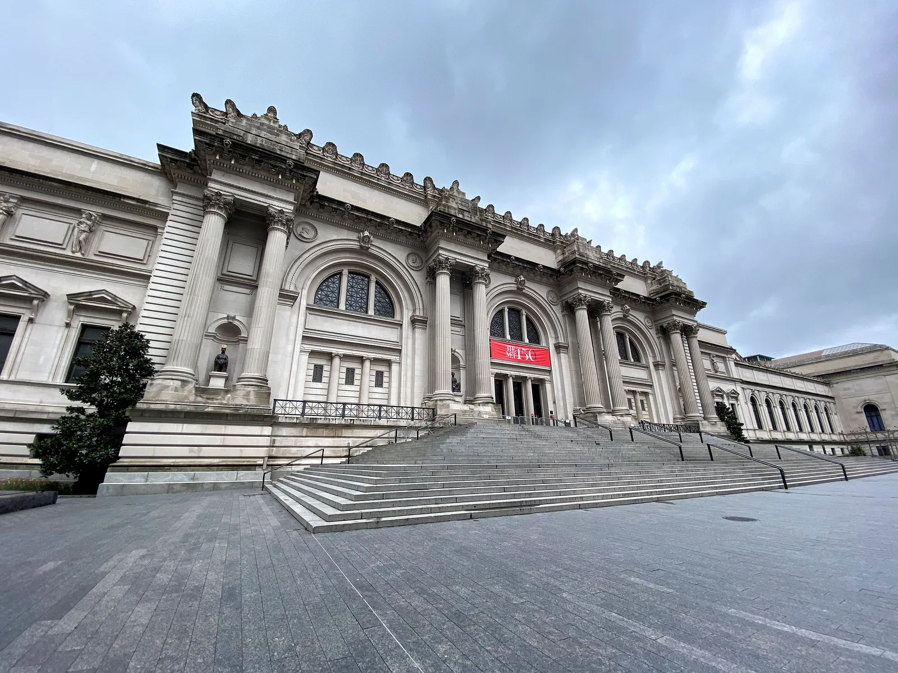
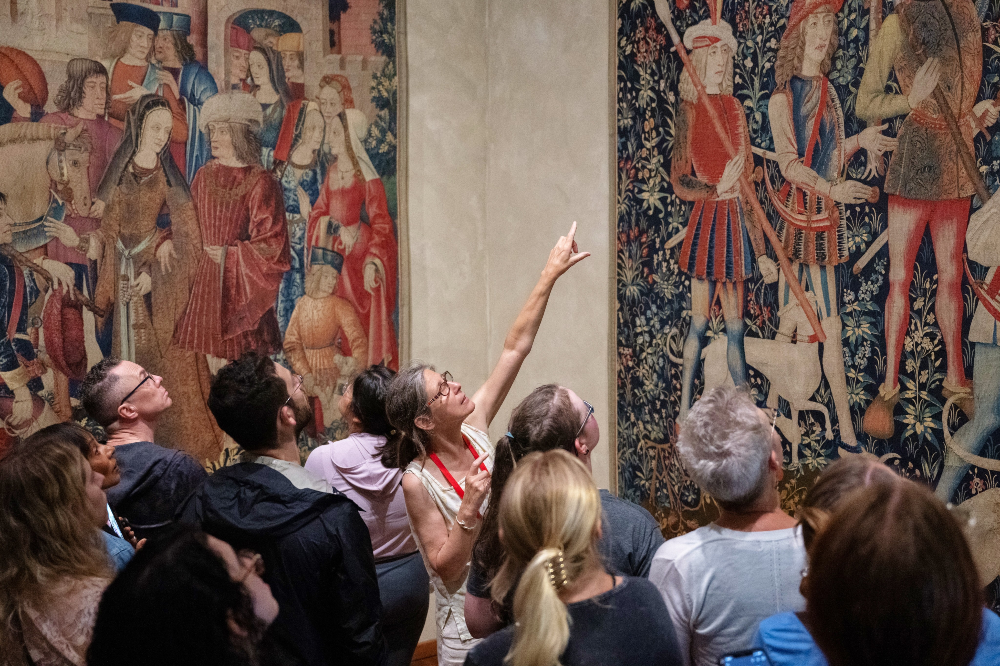

The Met Fifth Avenue
1000 Fifth Avenue
New York, NY 10028
Contacto / El museo
Detrás de una noche de moda, un museo lleno de historias.
Encontrá tu punto de encuentro
Mucho más que una alfombra roja
El Metropolitan Museum of Art colecciona, estudia, conserva y presenta obras de arte de diversas épocas y culturas, con el fin de conectar a las personas con la creatividad, el conocimiento y las ideas.
Más de 5.000 años de arte se encuentran en sus colecciones. Desde su fundación en 1870, el museo invita a descubrir conexiones entre épocas y culturas, tanto en sus galerías como a través de internet.
Explorar el museo (abre en otra pestaña)
Dos sedes, muchas historias
1000 Fifth Avenue
New York, NY 10028
99 Margaret Corbin Drive
New York, NY 10040
Tu consulta tiene un lugar
Elegí el área del Costume Institute y prepará tu mensaje.
¿Querés conocer más sobre la gala?
Consultá las preguntas frecuentes